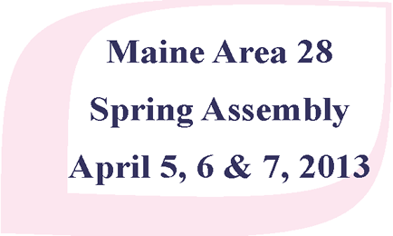

The Maine Area Spring Assembly is coming right up on April 5th-7th. This is a good oppertunity to network with other AA'ers from around the state. It will be held in Millinocket, ME and for more information, you can download the flyer.
Down in Blue Hill, there will be a Love and Service workshop on Sunday, April 14th from 11:30 am to 3:00 pm. Come join in the fun and fellowship, where there will be a good speakers and a Pot Luck lunch. Bring a dish and join in! This will be at Odd Fellows (IOOF) on Main Street, Blue Hill. Here is their flyer.

There will be a "Spring Fling" on April 20th to benefit the Recovery Goes to Camp weekend in May (see below). There will be AA meetings, an Auction, free dinner and dance. See the flyer for all the details.
On April 28th, the annual "Old Timer's" meeting in Mattawamkeag will be going on. Come enjoy the speakers with 20 or more years of sobriety. Bring a dish and join in the Pot Luck lunch. The doors open at 11:00 am, followed by the Pot Luck at noon and the speakers going from 1:15 pm to 3:30 pm! It will be at the Town Hall on Main Street. See their flyer for details.

From May 24th-26th, there will be a Round-Up, or "Recovery Goes to Camp" weekend held at the Camp Roosevelt Boy Scout Camp in East Eddington Maine. Recovery Goes to Camp is sponsered by the "Out to Lunch Bunch" noon time meeting in Brewer. There will be a number of AA and Alanon meetings throughout the weekend. There are a number of options for for lodging and meals. See the flyer for all the details!
The 16th Annual Big Book weekend at Tanglewood will be coming up on June 7th-9th, 2013. This event is hosted by the "It's in The Book Group" in Camden, ME. Tanglewood is located in Lincolnville, ME. "Come Explore the Big Book in a 300 arce natural setting with our guest speaker "Tom Ivester from Florida". Check out their flyer here!
The 36th annual Maine Area Roundup is fast approaching on July 19th-21st at Sugarloaf USA. Checkout their website at www.roundup.area28.org or just download the flyer if you like.